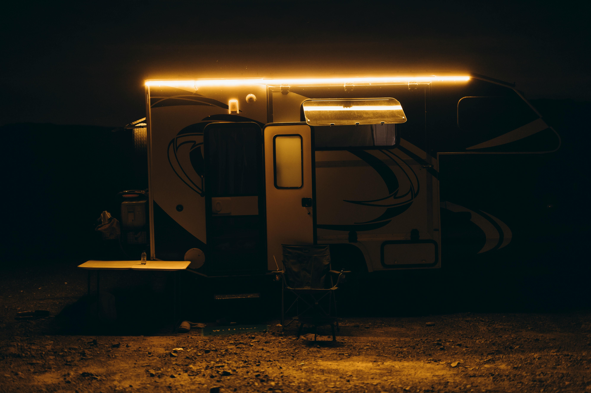

Welcome to LOGISTICA
Welcome to LOGISTICA, a premier name in freight forwarding and logistics based in Pakistan. We specialize in delivering reliable and cost-effective solutions for all your logistics and freight needs. At LOGISTICA, we offer a wide range of services, including import,export freight (LCL/FCL & AIR), warehousing, transportation, and distribution. Our clients view us as a crucial partner in their logistics operations, seamlessly integrating into their supply chain to enhance efficiency and reliability. We pride ourselves on leveraging cutting-edge technology and innovative practices to stay ahead in the industry. Our commitment to excellence and collaboration ensures that we consistently exceed our clients' expectations, fostering long-term partnerships and driving growth. Join the growing list of satisfied clients who trust LOGISTICA for their comprehensive freight and logistics solutions.
OUR SERVICES
At LOGISTICA, we offer a full suite of freight forwarding and logistics services tailored to meet the diverse needs of our global clientele.
Our clients rely on us as a key partner for their import,export needs, including LCL, FCL, and air freight, as well as warehousing, transportation, and distribution. We are dedicated to integrating seamlessly into their operations to ensure smooth and efficient logistics management.
By employing the latest technology and innovative logistics practices, LOGISTICA consistently enhances operational efficiency. Our commitment to cutting-edge solutions and collaborative approaches has made us a trusted choice for companies seeking reliable and effective logistics services.
CEO's Message

Our CEO, Ishtiaq Chaudhary, is committed to advancing our infrastructure and elevating our services. Under his leadership, LOGISTICA consistently strives for excellence and innovation, ensuring that our clients receive the most reliable and efficient solutions in the industry. Trust in our dedication to delivering top-tier service and seamless logistics.With over 25 years of experience in NVOCC import and clearing,His constant hard work and resilient nature have been instrumental in our success. His expertise and leadership continue to drive LOGISTICA forward, making us a trusted partner in the logistics industry.
Company Mottos
Welcome to LOGISTICA, a premier name in freight forwarding and logistics based in Pakistan. We specialize in delivering reliable and cost-effective solutions for all your logistics and freight needs. At LOGISTICA, we offer a wide range of services, including import,export freight (LCL/FCL & AIR), warehousing, transportation, and distribution. Our clients view us as a crucial partner in their logistics operations, seamlessly integrating into their supply chain to enhance efficiency and reliability. We pride ourselves on leveraging cutting-edge technology and innovative practices to stay ahead in the industry. Our commitment to excellence and collaboration ensures that we consistently exceed our clients' expectations, fostering long-term partnerships and driving growth. Join the growing list of satisfied clients who trust LOGISTICA for their comprehensive freight and logistics solutions.